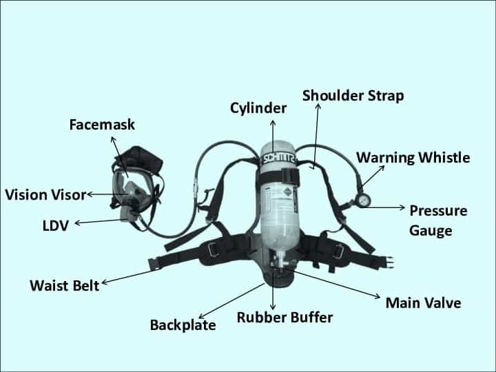
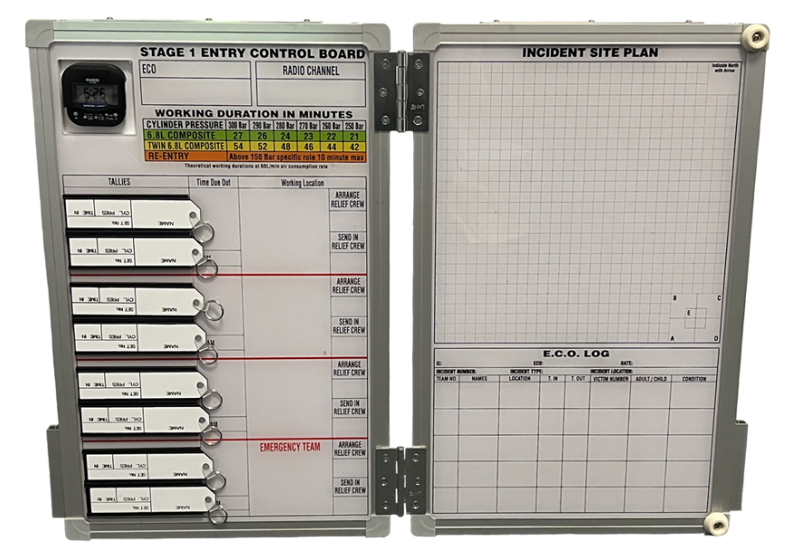

Self Contained Breathing Apparatus (SCBA)
Components of SCBA

- Cylinder – 6.8L at 300bar = 2040L. Must be hydrostatically tested every 5 years
- Valve group assembly (VGA)/pressure reducer – reduces pressure to the LDV to <9bar
- Pressure gauge – connected to VGA, shows how much air you have left
- Warning whistle – whistles when cylinder pressure is low (~55bar)
- Lung demand valve (LDV) – responds to wearer’s breathing allowing required amount of air to be supplied upon inhalation. Purge button on underside is used to purge air from line when cylinder is off, or to give additional air to wearer when cylinder is on. Pressing red button on top resets valve to close.
- Face mask – has neck strap, and adjustable head harness to tighten to face
- Back plate and harness – adjustable, straps should be loosened completely for removal and storage, ready for next person
- Personal distress alarm (PDA) – once tally tag is removed, PDA will alarm after 30 seconds of no movement, and then go into high alarm 30seconds later if still no movement to alert others they are in trouble
SCBA pressure checks
- Turn cylinder on, check it has >250bar (>80%)
- Turn cylinder off for 1 minute, check the pressure loss is less than 10bar, and that you don’t hear leaks, during this minute inspect condition of overall SCBA set
- Remove the LDV from the face mask and then whilst watching the pressure gauge, gradually purge the lines of air by holding you hand against the LDV, you should hear the warning whistle at ~55bar. Press red button to reset LDV.
- Turn cylinder back on, don SCBA set, check there is positive pressure by sticking 2 fingers inside side of mask, air should rush out
- Perform negative pressure check – hold down red LDV button and breathe in and hold breath for a few seconds, should feel it suck to your face to confirm good seal

Entry Control Officer (ECO) duties
- Wear high vis ECO vest, radio, have ECO board, perform pre-operational briefing at entry control point
- Inspect fitted SCBA and PPE on strike team, watch high/low pressure tests being performed
- Collect tally tags from PDA’s and record pressure and time of strike teams and permit entry, record time they need to get out based on ECO board BA tables
- Maintain radio comms with strike team, update SITREP on ECO board, identifying number/location of casualties, request strike team air pressures at intervals
- Co-ordinate entry and handover of further strike teams
- Debrief
When is BA required? (HOTS)
- Heated atmosphere
- Oxygen deficient
- Toxic atmosphere
- Smoke/suspended particles
Rules of BA (METOPDOG)
- M - Minimum 250bar (>80% full)
- E - Report to ECO before entry
- T - Teams of 2 as a minimum - exemptions may apply in confined spaces, when within line of sight of ECO, working from EWP, decontamination (HAZMAT)
- O - OIC must authorise use of BA
- P - PDA's take priority over all tasks
- D - Don and doff in fresh air
- O - One out, all out - whole team must exit together when one person has to
- G - Guidelines to be considered - generally just use hose, escape following hose back if neccessary
Working BA duration = cylinder pressure (bar)- 50bar (safety margin) x cylinder volume / Average consumption rate (60L/min).
(300-50) x 6.8 / 60 = 28mins